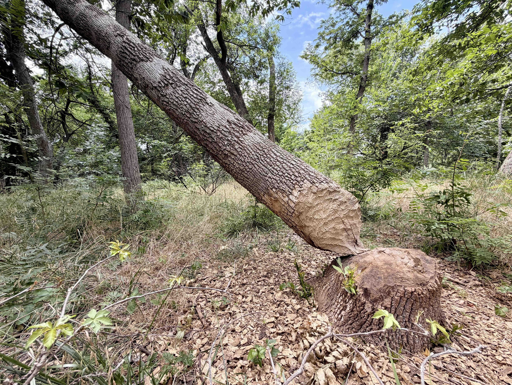
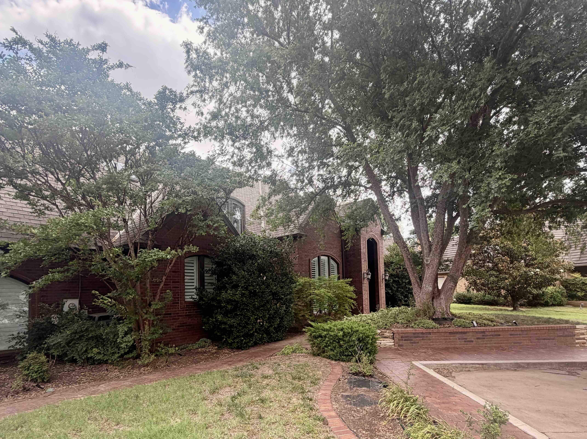
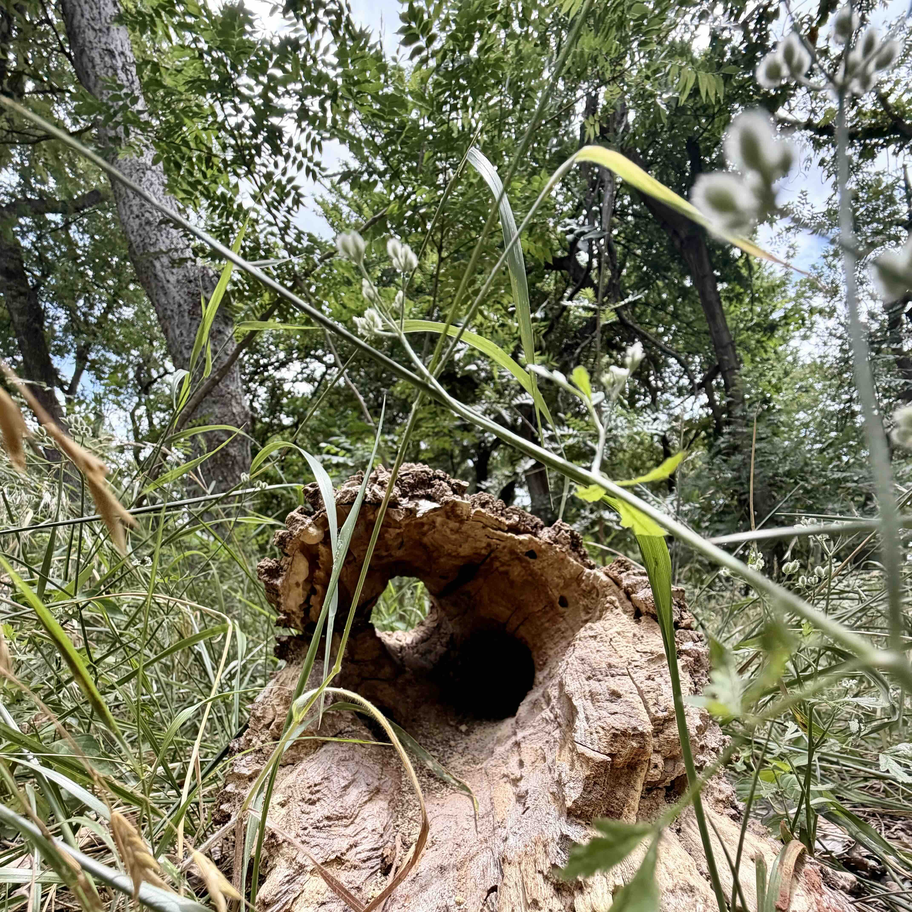
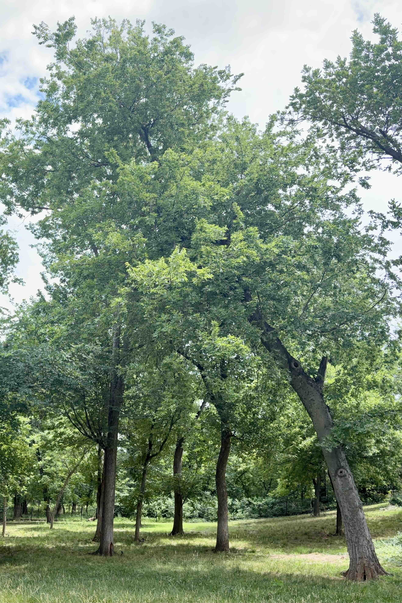
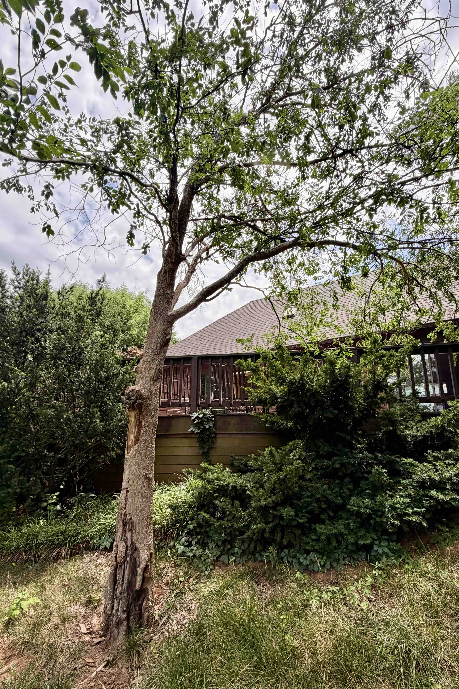
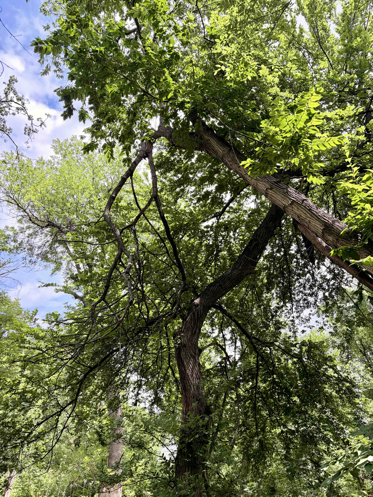
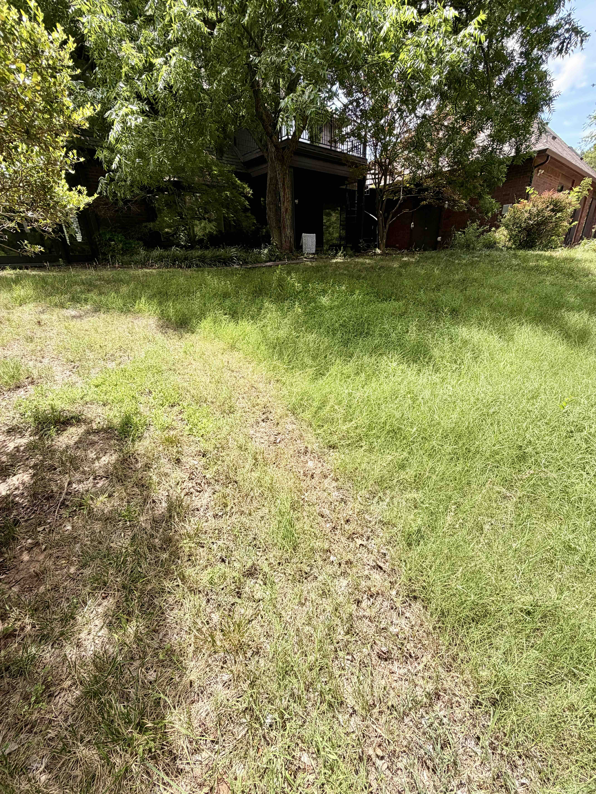
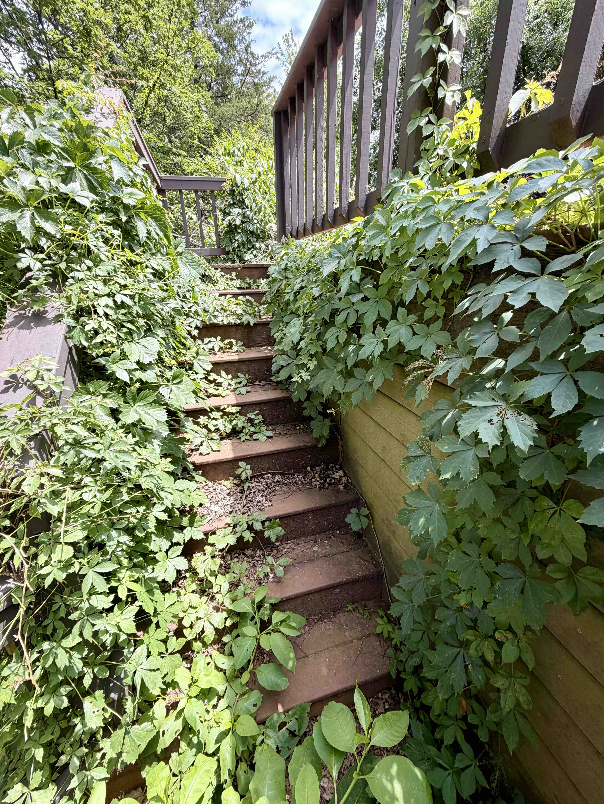
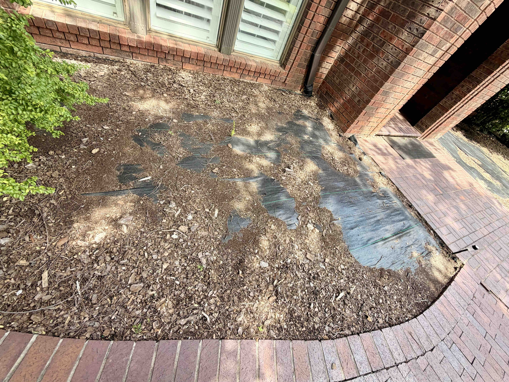

Plum Hollow Woodland Estate
Prepared For: John Lewis
Prepared By: Christian Castillo
Abundant Life Land & Tree LLC
Date of Assessment: June 11, 2026

Executive Summary
This assessment was conducted to evaluate the health, safety, ecological function, accessibility, and long-term stewardship opportunities present throughout the property.
The property represents a rare and increasingly uncommon landscape type within Oklahoma City: a mature woodland estate integrated with meadow habitat, riparian systems, ornamental landscape features, and residential living spaces.
During our discussions, the owner repeatedly referenced the concept of rhythm when describing what he loves most about the property. This report adopts that concept as a guiding principle.
The property's greatest strength is not any individual tree, garden, or landscape feature, but rather the interaction between woodland, meadow, wildlife, water, and human occupancy. Future stewardship should seek to preserve and strengthen these natural dynamics while improving safety, accessibility, ecological function, beauty, and enjoyment.
Property Overview
Location: Bluff Creek / Martin Nature Park Area
The property consists of four interconnected systems:
Woodland System
Mature woodland containing hackberry, slippery elm, black walnut, silver maple, volunteer native hardwoods, and mixed understory regeneration.

Meadow System
A broad sloping meadow occupying much of the rear property. This area provides substantial opportunity for pollinator habitat, wildlife support, erosion reduction, water infiltration, and native plant establishment.
Riparian System
The creek corridor serves as an ecological backbone supporting wildlife movement, birds, dragonflies, pollinators, amphibians, and aquatic habitat.
Residential Landscape System
Includes the front lawn, flower beds, walkways, driveway, grand entrance, and ornamental tree plantings: lacebark elm, cypress, juniper, holly, crepe myrtle, & magnolia.

Owner Goals
Primary Objectives
- Mobility throughout the property
- Improved safety
- Wildlife coexistence
- Ecological stewardship
- Preservation of mature trees
- Pollinator support
- Reduced mosquito, tick, and flea pressure
- Long-term landscape beauty
- Accessible gardening
- Reduced chemical dependency
- Preservation of property character
Desired Property Character
The owner consistently expressed appreciation for natural beauty, ecological function, wildlife, habitat, rhythm, heirloom gardening, native plants, and long-term stewardship.
Woodland Assessment
Overall woodland health is fair to good. The woodland currently functions as a largely self-sustaining ecological system.
Strengths
- Mature canopy structure
- Species diversity
- Natural regeneration
- Existing wildlife habitat
- Cavity trees
- Deadwood habitat
- Significant ecological value
Weakneses
- Encroachment of Japanese Stiltgrass

Significant Tree Findings
Hazard Hackberry
A mature hackberry located within the meadow exhibits significant structural concerns, including basal decay, lightning damage, structural compromise, significant lean, and elevated likelihood of failure.
Recommendation: Removal is recommended.
To preserve ecological value, the tree should be reintegrated into the woodland ecosystem through retention of logs, habitat structures, and coarse woody debris where practical.

Lacebark Elm Adjacent to Deck
The lacebark elm adjacent to the deck exhibits advanced trunk decay, significant deadwood, reduced canopy density, and hollow interior confirmed through sounding. The tree is positioned directly adjacent to occupied outdoor living areas.
Recommendation: Removal is recommended.
This represents one of the highest-priority risk reduction opportunities identified during the assessment.

Black Walnut Adjacent to Residence
A mature black walnut immediately behind the home provides substantial ecological and aesthetic value. The owner expressed a desire to preserve this tree while reducing conflicts with the residence.
Recommendation: Selective structural pruning should be performed to:
- Increase roof clearance
- Increase structure clearance
- Reduce future branch conflicts
- Remove girdled limb
- Preserve long-term tree health
Root conflicts should be monitored and addressed conservatively.
Property-Wide Crown Lifting Program
The owner expressed a preference for improved walking clearance throughout the property. Phased crown lifting should be implemented where appropriate and biologically reasonable.
Front Magnolia
The mature magnolia at the front of the property would benefit from structural pruning and crown lifting while preserving its natural ornamental character.
Woodland Safety Assessment
The woodland contains multiple examples of hung-up branches, suspended deadwood, broken tops, vine-supported failures, and storm damage. Several locations beyond the current fence line contain overhead hazards.
Recommendation: Establish a Woodland Risk Reduction Program.
- Removal of dangerous hangers
- Occupancy-zone safety
- Trail safety
- Patio-site safety
- Long-term monitoring
The objective is not to sterilize the woodland, but to allow safe human use while preserving ecological value.

Meadow Assessment
The meadow exhibits excellent ecological potential. Observed benefits include deep-rooted vegetation, existing drainage pathways, functional infiltration, wildlife support, and pollinator opportunities.
Comparison between recently mowed and unmowed areas suggests that taller vegetation substantially improves water infiltration, soil protection, moisture retention, root development, and wildlife habitat.

Hydrology & Erosion
The property's existing meadow vegetation appears to be providing meaningful erosion resistance. Potential erosion risks include excessive mowing, soil compaction, vegetation removal, and concentrated runoff.
Continued transition toward managed ecological grassland is recommended.
Potential Maintenance Methods
- Sickle-bar mowing with electric hedgetrimmer
- Strategic long-interval seasonal mowing
- Electric line-trimmer path creation
- Selective management zones
- Native Plantings
Wildlife & Pollinator Enhancement
The property already supports exceptional wildlife habitat relative to most urban properties. Opportunities exist to further enhance pollinators, birds, dragonflies, amphibians, and beneficial insects.
Ecological Mosquito, Tick & Flea Management
The owner expressed interest in reducing mosquito, tick, and flea pressure for both people and pets. Rather than relying solely upon chemical controls, ecological management strategies may improve overall balance.
Recommended Additions
- Increase meadow sunlight and airflow
- American beautyberry
- Native flowering plants
- Dragonfly habitat enhancement
- Small bird habitat improvement
- Meadow diversification
Dragonflies are particularly valuable as natural mosquito predators and should be encouraged through preservation of aquatic habitat and native vegetation.
Woodland Edge Enhancement
American Beautyberry
American beautyberry is recommended throughout woodland edge zones due to its wildlife value, native beauty, seasonal interest, pollinator value, and usefulness as part of a broader ecological pest-management strategy.
Invasive & Undesirable Species Management
Nandina
Nandina was observed in several locations throughout the property.
Gradual removal and replacement with ecologically beneficial native species is recommended.
Potential Replacements
- American beautyberry
- Oakleaf hydrangea
- Possumhaw holly
- Arrowwood viburnum
- Native plum species
Outdoor Living Space Restoration
Virginia Creeper Management
Virginia creeper currently provides ecological value but has exceeded desired limits around the deck and stair systems.
Recommendation: Selective removal around:
- Decks
- Stairs
- Seating areas
- Access corridors
Desirable populations may be retained elsewhere on the property.

Woodland Observation Patio
The owner expressed interest in creating a small patio beyond the current fence line within the woodland. This concept aligns exceptionally well with the property's character.
Before installation, overhead hazards should be removed, hanging deadwood should be addressed, and the area should be made suitable for regular occupancy.
Recommended Patio Materials
- Flagstone
- Crushed granite
- Natural stone
Potential uses include wildlife observation, birdwatching, reading, relaxation, pet companionship, and seasonal enjoyment.
Tree & Shrub Relocation Opportunities
Several smaller trees currently occupy the proposed patio location.
Where feasible, suitable specimens should be transplanted elsewhere on the property. This approach preserves habitat value while supporting patio construction.
The owner also expressed interest in relocating the mature evergreen shrub beneath the rear window to a more appropriate location elsewhere on the property.
Vegetable Garden Opportunity
The owner expressed interest in establishing an heirloom vegetable garden in raised wooden beds that are tall enough to reduce rodent access and comfortable enough for limited recreational tending.
Recommended Design
- Natural wood construction
- Burlap-lined interiors
- Imported garden soil
- Permanent access paths
- Irrigation planning
- Height appropriate for a 6'1" user
Recommended Bed Height
30–42 inches, depending on final design and intended crop selection.
Suggested Heirloom & Woodland-Edge Garden Crops
- Cherokee Purple Tomato — A flavorful heirloom tomato with strong culinary appeal. Best placed in the sunniest bed, away from black walnut root influence where possible.
- Jimmy Nardello Pepper — Productive, sweet, and excellent for fresh eating or frying. Adds color and seasonal interest while remaining manageable in raised beds.
- Red Burgundy Okra — Heat-tolerant, ornamental, and productive in Oklahoma summers. Its upright form adds vertical structure without sprawling heavily.
- Kentucky Wonder Pole Bean — A classic heirloom bean that can be grown vertically on trellises, maximizing production while preserving walking space around raised beds.
- Dragon Tongue Bean — Visually striking heirloom bush bean with cream-and-purple pods. Useful for adding variety, beauty, and easy harvest access.
- Swiss Chard — More tolerant of partial shade than many fruiting crops. Provides long-season color, texture, and reliable production near woodland-edge conditions.
- Lacinato Kale — A durable leafy green that tolerates cooler seasons and partial sun better than tomatoes or melons. Excellent for extending the garden beyond summer.
- Parisian Carrot — A small round heirloom carrot well suited to raised beds, especially where soil depth or perfect looseness may be limited.
- French Breakfast Radish — Fast-growing, attractive, and useful for early-season harvests. Helps create quick success in new raised beds.
- Chioggia Beet — An heirloom beet with striking internal rings. Performs well in raised beds and offers both edible roots and greens.
- Arugula — Quick-growing and relatively tolerant of partial shade. Useful for spring and fall plantings when woodland-edge light is more favorable.
- Genovese Basil — Strong companion to tomatoes and peppers, highly aromatic, and useful for culinary enjoyment. Best placed in the sunniest portion of the garden.
- Garlic Chives — Perennial, compact, pollinator-friendly when flowering, and generally well suited to raised-bed edges.
- Nasturtium — Edible flowers and leaves, strong ornamental value, and useful for softening bed edges. Adds color and pollinator interest.
- Calendula — Edible flowers, pollinator support, and strong visual charm. Helps the garden feel less utilitarian and more integrated with the surrounding landscape.
This planting palette intentionally balances sun-loving heirloom fruiting crops with more shade-tolerant greens, roots, herbs, and edible flowers. Because the garden will sit near woodland conditions, final crop placement should respond to actual sunlight patterns, with tomatoes, peppers, basil, and okra receiving the highest-light positions.
Garden placement should prioritize sunlight while minimizing black walnut influence.
Front Landscape Assessment
Several front beds contain aging landscape fabric, incomplete planting areas, sparse planting density, and weed pressure. These conditions contrast with the otherwise high-quality appearance of the property and surrounding neighborhood landscapes.
Gradual restoration is recommended through fabric removal, soil improvement, bed redevelopment, native and ornamental plantings, and long-term stewardship.

Front Lawn Transition Strategy
The owner expressed interest in reducing dependence upon traditional turfgrass. Creeping thyme was discussed as a potential alternative.
Until a new mow-free or mow-reduced groundcover system is established, front lawn maintenance using battery-electric mowing equipment is recommended.
Benefits of Electric Lawn Service
- Reduced noise
- Reduced emissions
- Reduced disturbance
- Improved compatibility with stewardship goals
Additional groundcover evaluation is recommended prior to implementation.
Non-Chemical Weed Management
The owner expressed a preference for minimizing chemical herbicide use.
Weeds are present within driveway joints, walkways, and hardscape transitions.
Mechanical control through line trimming, hand removal, and routine maintenance is recommended. This approach aligns closely with the ecological objectives of the property.
Priority Recommendations
- Remove declining hackberry
- Remove declining lacebark elm
- Remove hazardous suspended deadwood
- Improve deck access safety
- Black walnut clearance pruning
- Property-wide crown lifting
- Magnolia pruning
- Virginia creeper management
- Woodland patio development
- Evergreen shrub relocation
- Tree transplanting at patio site
- Front landscape restoration
- Meadow enhancement
- Pollinator expansion
- Beautyberry installation
- Nandina removal
- Raised heirloom vegetable garden
- Groundcover conversion planning
- Long-term ecological stewardship
Five-Year Stewardship Vision
This property has the potential to become a highly functional ecological estate where woodland, meadow, wildlife habitat, gardening, and outdoor living spaces operate in harmony.
The goal is not simply maintenance.
The goal is cultivation of a landscape whose richness can be observed, enjoyed, and participated in throughout the seasons.
Future stewardship efforts should strengthen the relationships between trees, wildlife, water, gardens, people, and place while preserving the character that makes this property exceptional.
Prepared by:
Christian Castillo
Abundant Life Land & Tree LLC
Owner | Arborist | Landscaper
www.AbundantLife.Land
405-953-1285